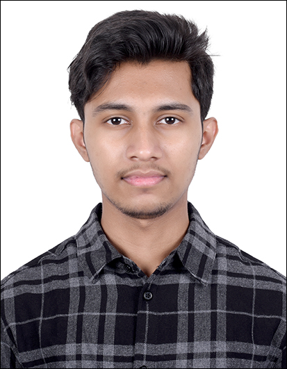

Devarshi Gutti

Summary
I intend to be a part of an organization where I can constantly learn and develop my
technical and management skills and make the best use of it for the growth of
organization.
Education
Secondary School (Science)
May, 2015 - May, 2016
- Sri Vijay Vidyalaya, Hosur
- 96.4%
Higher Secondary School (Science)
May, 2017 - May, 2018
- Narayana PU College
- 86.33%
Bachelor of Technology (Mechanical Engineering)
June, 2018 - May, 2022
- Vellore Institute of Technology, Vellore
- 8.52
Work Experience
ArcelorMittal Nippon Steel India (Graduate Engineer Trainee)
June, 2022 - September, 2022
- Supervising technicians during the scheduled maintenance of valves,
hydraulics and other mechanical components to make sure they are
following the safety protocols.
- Maintaining a checklist of components during the scheduled
maintenance.
Tata Elxsi Ltd (Design Engineer)
October, 2022 - Present
- Responsible for data enrichment of documents to help Zimmer
Biomet in data migration from team center to Windchill PLM.
- Involved in design and development of steerable catheter
Skills
- HTML
- Microsoft Office
- Python
Other